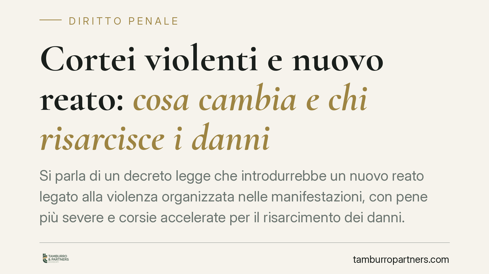

Cortei violenti e nuovo reato: cosa cambia e chi risarcisce i danni
Si parla di un decreto legge che introdurrebbe un nuovo reato legato alla violenza organizzata nelle manifestazioni, con pene più severe e corsie accelerate per il risarcimento dei danni. I riferimenti numerici circolati non sono ancora consolidati e vanno verificati. Chi partecipa a cortei, le famiglie dei minori e i commercianti coinvolti hanno comunque interesse a capire cosa sta accadendo.

Avvertenza preliminare
I riferimenti al presunto D.L. 190/2026 e alla numerazione di un nuovo articolo del codice penale (indicato come art. 635.1 c.p.) non risultano ad oggi verificabili e vengono qui trattati come ipotesi di lavoro, non come diritto vigente. Prima di assumere qualsiasi decisione è indispensabile riscontrare testo, numero e contenuto effettivo sulla Gazzetta Ufficiale. Un decreto legge, inoltre, decade se non convertito in legge entro sessanta giorni e può essere modificato in sede parlamentare: anche quanto oggi circola potrebbe cambiare in modo sostanziale.
Il quadro: cosa si prospetta
Le anticipazioni descrivono un intervento su più fronti. In primo luogo, la creazione di una nuova fattispecie penale centrata sulla violenza organizzata durante le manifestazioni pubbliche. In secondo luogo, l'inasprimento di pene e aggravanti per condotte di gruppo, con richiamo ad articoli già esistenti del codice penale. In terzo luogo, misure in materia di minorenni e strumenti per accelerare il risarcimento dei danni.
Tutti questi profili, allo stato, sono annunci da confermare. Li esaminiamo per orientare chi è coinvolto, con l'avvertenza che ogni dato numerico è soggetto a conferma.
Inquadramento normativo
Gli articoli del codice penale citati come oggetto di modifica esistono già e hanno rubriche precise. L'art. 419 c.p. disciplina la devastazione e il saccheggio. L'art. 420 c.p. riguarda l'attentato a impianti di pubblica utilità: si tratta di norma che nel tempo ha subito modifiche, con spostamento di alcune condotte verso altre disposizioni, perciò la sua portata attuale va riscontrata sul testo in vigore. L'art. 635 c.p. punisce il danneggiamento.
L'ipotetico inasprimento delle cornici edittali di questi reati e l'introduzione di una nuova fattispecie specifica non sono, al momento, dati certi: vanno letti sul provvedimento effettivamente pubblicato.
Sul versante dei minori, gli artt. 97 e 98 c.p. già oggi distinguono: sotto i quattordici anni il minore non è imputabile; tra i quattordici e i diciotto la capacità di intendere e di volere è accertata dal giudice caso per caso. Un'eventuale modifica che spostasse l'onere di provare l'incapacità sulla difesa sarebbe giuridicamente delicata e andrebbe misurata con i principi costituzionali, in particolare con la presunzione di non colpevolezza (art. 27 Cost.). Finché non esiste un testo con questo esatto tenore, è prudente non darlo per acquisito.
Implicazioni pratiche
Resta ferma una distinzione essenziale: partecipare a una manifestazione non equivale a far parte di un gruppo violento. La responsabilità penale è personale e presuppone l'accertamento di una condotta e di un contributo concreto all'illecito. Chi manifesta pacificamente non risponde delle violenze altrui.
Sul risarcimento, va chiarito un punto spesso presentato in modo approssimativo. Il danno da reato si recupera, di norma, costituendosi parte civile nel processo penale oppure con un'autonoma azione civile. Il decreto ingiuntivo è uno strumento diverso: presuppone un credito certo, liquido ed esigibile, difficilmente compatibile con danni da illecito ancora da quantificare. L'ipotesi di una "corsia rapida" risarcitoria va quindi verificata nei suoi presupposti processuali effettivi, perché la quantificazione del danno resta un passaggio ineludibile.
Cosa fare in concreto
- Se partecipi a un corteo: documenta la tua presenza pacifica e allontanati appena la situazione degenera; conserva prove (orari, posizione, testimoni) che dimostrino l'assenza di condotte violente.
- Se sei genitore di un minore coinvolto: non sottovalutare l'audizione o l'identificazione; verifica subito la posizione del ragazzo e i presupposti dell'imputabilità, senza accettare come scontata alcuna "presunzione" non prevista dal testo di legge.
- Se sei commerciante o ente colpito dai danni: fotografa e quantifica i danni con perizia, raccogli denunce e fatture, e valuta con un legale la via più adatta tra costituzione di parte civile e azione civile.
- In ogni caso: verifica il testo effettivo del provvedimento sulla Gazzetta Ufficiale e l'esito dell'iter di conversione, perché numeri e contenuti possono cambiare.
Per chi si trova esposto a questi scenari è opportuna una valutazione della singola posizione sulla base del testo normativo definitivo.
Disclaimer
Contributo informativo a cura di Tamburro & Partners - Avv. Giuseppe Tamburro. Non costituisce parere legale.
Ogni condominio ha una storia a sé.
Se gestisci un'amministrazione e vuoi un confronto su una specifica questione condominiale, scrivi allo studio. Ti rispondiamo entro un giorno lavorativo.